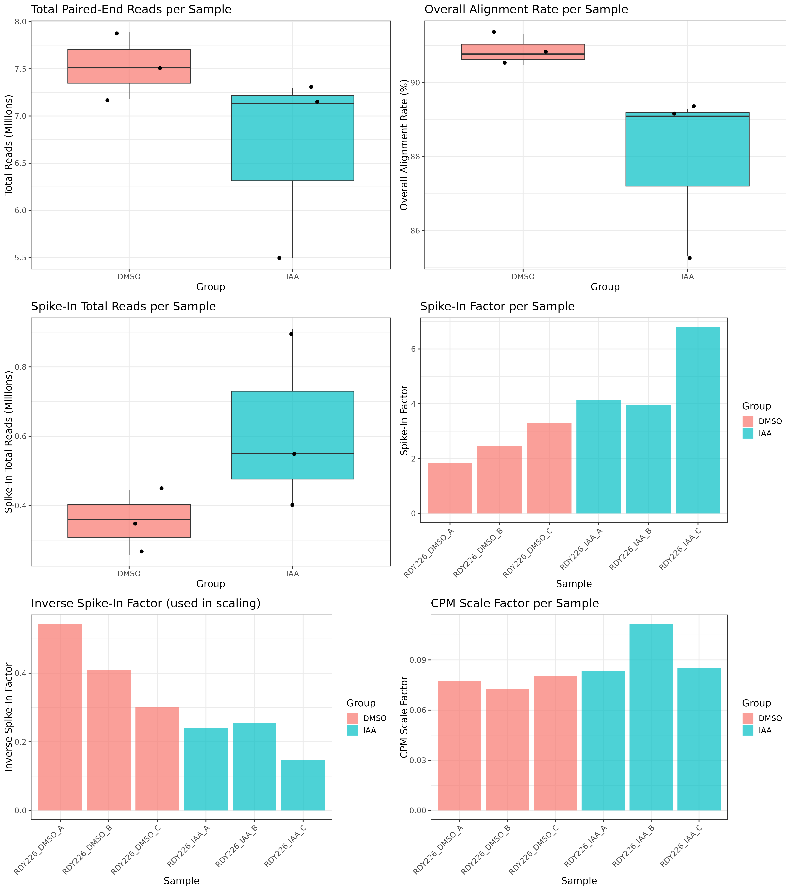
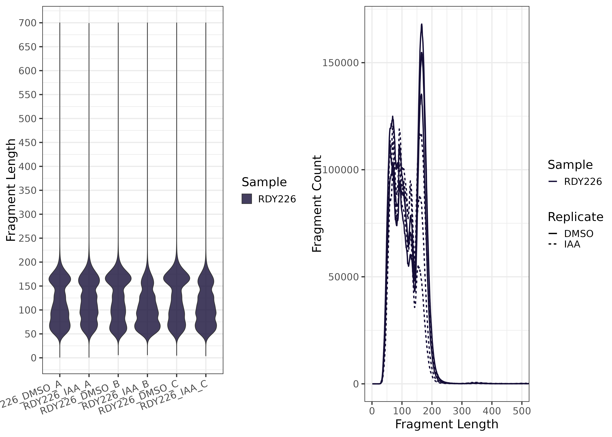

ChEC-Seq_Analysis
Kevin Boyd
05/19/2025


ChEC-seq Analysis Snakemake Workflow

- OpenAI. (2025). Scientific data visualization: CHEC-seq pipeline
schematic [AI-generated image]. DALL-E. Retrieved from ChatGPT
interface.
1) Project Description
ChEC-seq Analysis Snakemake Workflow is a Snakemake
pipeline designed for Chromatin Endogenous Cleavage (ChEC) experiments.
Rather than manually invoking each step (QC, trimming, alignment,
coverage generation, mean coverage merging, WIG conversion, and plotting
alignment metrics), this pipeline automates the entire process from
raw FASTQ inputs to multiple coverage
tracks (raw, CPM, and spike-in normalized), as well as merged
replicates to create an average signal track via a
merge_group column in samples.csv. CPM tracks
are created by calculating the total number of reads in a specified
include list region (e.g., non-rDNA genome), then generating a scale
factor as the reciprocal of reads per million (i.e., 1 / (total_reads /
1,000,000)), which is applied during coverage generation.
Key Features
- Flexible Spike-In Normalization
- Simultaneously aligns reads to the primary S. cerevisiae genome and a spike-in genome (e.g., S. pombe), calculating a per-sample scaling factor to accurately normalize coverage.
- Automatic Trimming & QC
- FastQC runs on raw FASTQs
- MultiQC summarizes all QC reports into one unified HTML report
- BBDuk handles adapter removal
- Multiple Coverage Outputs
- Raw BigWig, BedGraph, & Wig: unnormalized
coverage
- CPM BigWig, BedGraph, & Wig: a scale factor is generated as the reciprocal of reads per million and applied to normalize coverage to a read depth of 1×10⁶
- Spike-In BigWig, BedGraph, & Wig: additional
normalization via spike-in factor
- Average Coverage BigWig, BedGraphs & Wig: average signal for single samples and merged sets
- Raw BigWig, BedGraph, & Wig: unnormalized
coverage
- Merge Coverage by Group
- A
merge_groupcolumn insamples.csvallows replicates to be combined into a mean coverage bedGraph and BigWig/WIG
- A
- Modular, Parallel Workflow
- Each step defined as a Snakemake rule with explicit
inputs/outputs
- Snakemake manages HPC job submissions, ensuring fast parallel processing of samples and the ability to only rerun needed steps
- Each step defined as a Snakemake rule with explicit
inputs/outputs
- Automated Plot Generation
- Summary plots include:
- Alignment statistics (paired reads, alignment rate, spike-in reads, spike-in factor)
- Fragment length distributions per sample using violin and line plots
- Summary plots include:
2) Intended Use Case
This pipeline is ideal for performing
ChEC-seq. It is a user-friendly workflow with
customizable samples.csv and config.yml files,
enabling reproducible and flexible analysis:
- Start with raw FASTQ reads
- Use an external spike-in organism (e.g., S. pombe or D.
melanogaster) for normalization
- Produce coverage files for genome browsers (BigWigs, BedGraphs, or
WIGs)
- Merges replicates by condition or replicate group
By offering multiple coverage normalizations and easy HPC integration, this pipeline streamlines data preparation for subsequent analysis or visualization (e.g., IGV tracks, coverage heatmaps), including mean coverage tracks for replicate sets.
3) Dependencies and Configuration
All parameters and module versions are specified in
config/config.yml
Key fields include: - scer_genome: path
to the S. cerevisiae Bowtie2 index
- spikein_genome: path to the Spike In
Bowtie2 index (e.g., S. pombe)
- bbmap_ref: adapter sequence reference for BBDuk
- binSize: bin size for coverage generation
-
fastqc, bowtie2, samtools, deeptools, bedtools, ucsc, python:
module versions for HPC
Changing Genomes
+ If using a different spike-in (e.g. D. melanogaster), just
update the relevant Bowtie2 index and references in
config.yml.
Tool Versions and Modules
+ The config.yml file specifies all software and specific
versions
4) Tools & Modules
This Snakemake pipeline relies on: - FastQC for read
quality checks - MultiQC for summarizing FastQC reports
- BBDuk (in BBMap) for adapter
trimming
- Bowtie2 for alignments
- Samtools for BAM conversions/indexing
- DeepTools (bamCoverage) for coverage generation
- Bedtools for Average Signal files -
Python for spike-in factor calculations and WIG
conversions - UCSC (bedGraphToBigWig) to generate
average signal BigWigs from BedGraphs - R to generate
alignment metric plots
5) Example Data
A minimal test dataset can be placed in a resources/
folder (not included currently). Update samples.csv to
point to these FASTQs for a quick test run. Once confirmed, replace with
your personal ChEC-seq data.
6) Explanation of samples.csv
config/samples.csv defines which FASTQ files to process,
what the naming convention will be, and which samples to create average
signal tracks. An example samples.csv is provided
below:
| sample | fastq1 | fastq2 | merge_group |
|---|---|---|---|
| RDY226_DMSO_A | /path/ExampleA_R1.fastq.gz | /path/ExampleA_R2.fastq.gz | DMSO |
| RDY226_DMSO_B | /path/ExampleB_R1.fastq.gz | /path/ExampleB_R2.fastq.gz | DMSO |
| RDY226_IAA_A | /path/ExampleC_R1.fastq.gz | /path/ExampleC_R2.fastq.gz | IAA |
- sample: unique sample ID that will serve as file
naming convention downstream
- fastq1 and fastq2: file paths to
paired-end fastq files
- merge_group: optional label for merging coverage
across replicates (e.g., DMSO vs. IAA). Samples with the same
merge_groupwill be averaged into a mean coverage BedGraph and BigWig/WIG.
7) Examples of Output
- Trimming and QC
- FastQC HTML reports in
results/qc/fastqc/ - MultiQC HTML reports in
results/qc/multiqc/ - Trimmed FASTQs in
results/trimmed/
- Aligned Files
- Primary BAMs in
results/alignment/scer
- Spike-in BAMs in
results/alignment/spikein
- Spike-In Factors
spikein_factors.csvinresults/spikein_factors/- lists scer/dmel read counts and a
spikein_factorfor each sample
- lists scer/dmel read counts and a
- CPM Scale Factors
cpm_scale_factors.csvinresults/scale_reads/- lists include region read counts and
scale_factorfor each sample
- lists include region read counts and
- BigWig Files
*_raw.bwinresults/bigwig/raw/
*_cpm.bwinresults/bigwig/cpm/
*_spikein.bwinresults/bigwig/spikein/*_cpm_mean.bwinresults/bigwig/cpm_mean/
- BedGraph Files
*_raw.bginresults/bedgraph/raw/
*_cpm.bginresults/bedgraph/cpm/
*_spikein.bginresults/bedgraph/spikein/
*_cpm_mean.bginresults/bedgraph/cpm_mean/
- WIG Files
*_raw.wiginresults/wig/raw/
*_cpm.wiginresults/wig/cpm/
*_spikein.wiginresults/wig/spikein/
*_cpm_mean.wiginresults/wig/cpm_mean/
- Alignment Statistics Plot
alignment_stats.pnginresults/plots/- Total paired-end reads per sample (boxplot)
- Overall alignment rate per sample (boxplot)
- Total spike-in reads per sample (boxplot)
- Spike-in factor per sample (barplot, grouped by replicate)
- Fragment Length Distribution Plot:
fragment_length_plot.pnginresults/plots/- A two-panel violin and line plot showing the distribution of insert fragment lengths for each sample, calculated from properly paired alignments.
8) Example of QC Plots
Below are some example plots generated by the pipeline.
| 1. Alignment Stats Plot.png | 2. Fragment Length Plot |
|---|---|
|  |  |
| Plots showing alignment metrics of primary and spike-in genome | Plot showing the fragment lengh distributions |
9) Instructions to run on Slurm managed HPC
9A. Download version controlled repository
wget https://github.com/RD-Cobre-Help/ChEC-Seq_Analysis/releases/download/v1.0.4/ChEC-Seq_Analysis-1.0.4.tar.gz
tar -xzf ChEC-Seq_Analysis-1.0.4.tar.gz
rm ChEC-Seq_Analysis-1.0.4.tar.gz
cd ChEC-Seq_Analysis-1.0.49B. Load modules
module purge
module load slurm python/3.10 pandas/2.2.3 numpy/1.22.3 matplotlib/3.7.19C. Modify samples and config file
vim samples.csv
vim config.yml9D. Dry Run
snakemake -npr9E. Run on HPC with config.yml options
sbatch --wrap="snakemake -j 20 --use-envmodules --rerun-incomplete --latency-wait 300 --cluster-config config/cluster_config.yml --cluster 'sbatch -A {cluster.account} -p {cluster.partition} --cpus-per-task {cluster.cpus-per-task} -t {cluster.time} --mem {cluster.mem} --output {cluster.output} --job-name {cluster.name}'"